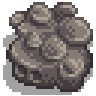

Boulder
| Boulder | |
|  | |
| An extremely dense piece of stone. | |
| Information | |
| Source | The Farm • The Mines • Skull Cavern |
Boulders are oversized rocks, occupying 4 tiles, found on The Farm and in The Mines. They are one of the main sources of stone in the game. However, no Mining Experience points are gained by destroying boulders.
Boulders on the Farm
Multiple boulders are present on the farm at the start of the game, frequently blocking access to bridges or other features. Removing them requires an upgraded Pickaxe, steel quality or higher, yielding 15 Stones.
The original farm boulders will never reappear once removed. However, rare meteorites may occasionally crash into the farm.
Boulders in the Mines
Boulders in the mine can be broken using any quality Pickaxe, yielding 10 Stones.
Shown below are boulders that can be found in the Mines levels 1-39, 81-119, and randomly within the Skull Cavern.
Shown below are boulders that can be found in the Mines levels 41-79.